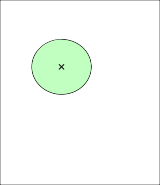
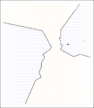

2.2.1 Measuring the Quality of Fit
2.2.1 적합성 품질 측정
In order to evaluate the performance of a statistical learning method on a given data set, we need some way to measure how well its predictions actually match the observed data.
주어진 데이터 세트에서 통계적 학습 방법의 성능을 평가하기 위해서, 우리는 그것의 예측들이 관측된 데이터와 실제로 얼마나 잘 일치하는지를 측정할 어떤 방법이 필요합니다.
That is, we need to quantify the extent to which the predicted response value for a given observation is close to the true response value for that observation.
즉, 우리는 주어진 관측치에 대한 예측된 응답 값이 해당 관측치에 대한 진정한 응답 값에 얼마나 가까운지에 대한 정도를 정량화해야 합니다.
In the regression setting, the most commonly-used measure is the mean squared error (MSE), given by
회귀 설정에서, 가장 흔하게 사용되는 척도는 다음과 같이 주어지는 평균 제곱 오차(mean squared error, MSE) 입니다.
\[MSE = \frac{1}{n} \sum_{i=1}^n (y_i - \hat{f}(x_i))^2 \tag{2.5}\]where $\hat{f}(x_i)$ is the prediction that $\hat{f}$ gives for the $i$th observation.
여기서 $\hat{f}(x_i)$ 는 $\hat{f}$ 가 $i$번째 관측치에 대해 제공하는 예측입니다.
The MSE will be small if the predicted responses are very close to the true responses, and will be large if for some of the observations, the predicted and true responses differ substantially.
MSE는 만약 예측된 응답들이 진정한 응답들에 아주 가깝다면 작을 것이고, 만약 일부 관측치들에 대해 예측된 응답들과 진정한 응답들이 실질적으로 다르다면 커질 것입니다.
The MSE in (2.5) is computed using the training data that was used to fit the model, and so should more accurately be referred to as the training MSE .
(2.5)에서의 MSE는 모델을 적합시키는 데 사용되었던 훈련 데이터를 사용하여 계산되며, 따라서 더 정확하게는 훈련 MSE(training MSE) 로 지칭되어야 합니다.
But in general, we do not really care how well the method works on the training data.
그러나 일반적으로, 우리는 그 방법이 훈련 데이터 상에서 얼마나 잘 작동하는지에 진정으로 신경 쓰지 않습니다.
Rather, we are interested in the accuracy of the predictions that we obtain when we apply our method to previously unseen test data .
오히려, 우리는 우리의 방법을 이전에 본 적 없는 시험 데이터에 적용할 때 우리가 얻는 예측들의 정확도에 관심이 있습니다.
Why is this what we care about?
이것이 왜 우리가 신경 쓰는 것일까요?
Suppose that we are interested in developing an algorithm to predict a stock’s price based on previous stock returns.
우리가 이전 주식 수익률들에 기초하여 주식의 가격을 예측하기 위한 알고리즘을 개발하는 데 관심이 있다고 가정해 봅니다.
We can train the method using stock returns from the past 6 months.
우리는 지난 6개월 동안의 주식 수익률들을 사용하여 그 방법을 훈련시킬 수 있습니다.
But we don’t really care how well our method predicts last week’s stock price.
하지만 우리는 우리의 방법이 지난주의 주식 가격을 얼마나 잘 예측하는지 진정으로 신경 쓰지 않습니다.
We instead care about how well it will predict tomorrow’s price or next month’s price.
대신 그것이 내일의 가격이나 다음 달의 가격을 얼마나 잘 예측할지에 대해 신경 씁니다.
On a similar note, suppose that we have clinical measurements (e.g. weight, blood pressure, height, age, family history of disease) for a number of patients, as well as information about whether each patient has diabetes.
비슷한 맥락에서, 우리가 다수의 환자들에 대한 각 환자의 당뇨병 보유 여부에 대한 정보뿐만 아니라 임상 측정치들(예를 들어, 체중, 혈압, 키, 나이, 질병의 가족력)을 갖고 있다고 가정해 보십시오.
We can use these patients to train a statistical learning method to predict risk of diabetes based on clinical measurements.
우리는 임상 측정치들에 기초하여 당뇨병의 위험을 예측하도록 특정 통계적 학습 방법을 훈련시키기 위해 이 환자들을 사용할 수 있습니다.
In practice, we want this method to accurately predict diabetes risk for future patients based on their clinical measurements.
실무에서, 우리는 이 방법이 그들의 임상 측정치들에 기초하여 미래의 환자들(future patients) 에 대한 당뇨병 위험을 정확하게 예측하기를 원합니다.
We are not very interested in whether or not the method accurately predicts diabetes risk for patients used to train the model, since we already know which of those patients have diabetes.
우리는 이미 그 환자들 중 누가 당뇨병을 갖고 있는지 알고 있으므로, 그 방법이 모델을 훈련시키는 데 사용된 환자들에 대한 당뇨병 위험을 정확하게 예측하는지 여부에는 별로 관심이 없습니다.
To state it more mathematically, suppose that we fit our statistical learning method on our training observations ${(x_1, y_1), (x_2, y_2), \dots, (x_n, y_n)}$, and we obtain the estimate $\hat{f}$.
이것을 좀 더 수학적으로 서술하자면, 우리가 훈련 관측치들 ${(x_1, y_1), (x_2, y_2), \dots, (x_n, y_n)}$ 상에 우리의 통계적 학습 방법을 적합시키고, 우리가 추정치 $\hat{f}$ 를 얻는다고 가정해 봅시다.
We can then compute $\hat{f}(x_1), \hat{f}(x_2), \dots, \hat{f}(x_n)$.
우리는 그러고 나서 $\hat{f}(x_1), \hat{f}(x_2), \dots, \hat{f}(x_n)$ 를 계산할 수 있습니다.
If these are approximately equal to $y_1, y_2, \dots, y_n$, then the training MSE given by (2.5) is small.
만약 이것들이 대략적으로 $y_1, y_2, \dots, y_n$ 와 같다면, (2.5)에 의해 주어진 훈련 MSE는 작습니다.
However, we are really not interested in whether $\hat{f}(x_i) \approx y_i$; instead, we want to know whether $\hat{f}(x_0)$ is approximately equal to $y_0$, where $(x_0, y_0)$ is a previously unseen test observation not used to train the statistical learning method.
그러나 우리는 $\hat{f}(x_i) \approx y_i$ 인지 여부에는 진정으로 관심이 없습니다; 대신 우리는 $\hat{f}(x_0)$ 가 대략적으로 $y_0$ 와 같은지 여부를 알기를 원하며, 여기서 $(x_0, y_0)$ 는 통계적 학습 방법을 훈련시키는 데 사용되지 않은 이전에 보지 못한 시험 관측치(previously unseen test observation) 입니다.

FIGURE 2.9. Left: Data simulated from $f$, shown in black. Three estimates of $f$ are shown: the linear regression line (orange curve), and two smoothing spline fits (blue and green curves). Right: Training MSE (grey curve), test MSE (red curve), and minimum possible test MSE over all methods (dashed line). Squares represent the training and test MSEs for the three fits shown in the left-hand panel.
그림 2.9. 좌측: 검은색으로 표시된, $f$ 로부터 시뮬레이션된 데이터. $f$ 의 세 가지 추정치들이 보입니다: 선형 회귀 선 (주황색 곡선), 그리고 두 개의 평활 스플라인 적합들 (파란색과 초록색 곡선들). 우측: 훈련 MSE (회색 곡선), 시험 MSE (빨간색 곡선), 그리고 모든 방법들에 걸쳐서 발생 가능한 최소 시험 MSE (점선). 정사각형들은 좌측 패널에 보이는 세 가지 적합들에 대한 훈련 MSE와 시험 MSE들을 나타냅니다.
We want to choose the method that gives the lowest test MSE, as opposed to the lowest training MSE.
우리는 가장 낮은 훈련 MSE가 아니라, 가장 낮은 시험 MSE(test MSE) 를 주는 방법을 선택하기를 원합니다.
In other words, if we had a large number of test observations, we could compute
다시 말해서, 만약 우리가 많은 수의 시험 관측치들을 지닌다면, 우리는 다음을 계산할 수 있을 것입니다.
\[\text{Ave}(y_0 - \hat{f}(x_0))^2 \tag{2.6}\]the average squared prediction error for these test observations $(x_0, y_0)$.
이 시험 관측치들 $(x_0, y_0)$ 에 대한 평균 제곱 예측 오차를.
We’d like to select the model for which this quantity is as small as possible.
우리는 이 양이 가능한 한 통계적으로 가장 작은 모델을 선택하고 싶습니다.
How can we go about trying to select a method that minimizes the test MSE?
시험 MSE를 최소화하는 방법을 선택하기 위해 우리는 어떻게 접근할 수 있을까요?
In some settings, we may have a test data set available—that is, we may have access to a set of observations that were not used to train the statistical learning method.
어떤 설정들에서는, 어쩌면 이용 가능한 시험 데이터 세트를 가질 수 있습니다—즉, 우리의 통계적 학습 방법을 훈련하는 데 사용되지 않은 일련의 관측치들에 대하여 접근할 수 있습니다.
We can then simply evaluate (2.6) on the test observations, and select the learning method for which the test MSE is smallest.
우리는 그런 다음 시험 관측치들에 대해 (2.6)을 단순하게 평가할 수 있고, 가장 작은 시험 MSE를 제공하는 학습 방법을 선택할 수 있습니다.
But what if no test observations are available?
하지만 만약 이용 가능한 시험 관측치들이 없다면 어떻게 될까요?
In that case, one might imagine simply selecting a statistical learning method that minimizes the training MSE (2.5).
그러한 경우, 단순히 훈련 MSE (2.5)를 최소화시키는 통계적 학습 방법의 선택을 상상할 지도 모릅니다.
This seems like it might be a sensible approach, since the training MSE and the test MSE appear to be closely related.
훈련 MSE와 시험 MSE가 꽤나 밀접하게 연관된 것처럼 보이기 때문에, 이것은 상당히 합리적인 접근법처럼 보일 수 있습니다.
Unfortunately, there is a fundamental problem with this strategy: there is no guarantee that the method with the lowest training MSE will also have the lowest test MSE.
불행히도, 이 전략에는 하나의 근본적인 문제가 도사립니다: 가장 낮은 훈련 MSE를 지닌 동일 방법이 가장 낮은 시험 MSE를 가질 것이라는 절대적인 보장이 없습니다.
Roughly speaking, the problem is that many statistical methods specifically estimate coefficients so as to minimize the training set MSE.
대략적으로 말하자면, 그 문제는 적지 않은 수의 통계적 방법들이 훈련 세트 MSE를 통계적으로 최소화하기 위하여 명시적으로 모델의 계수들을 추정한다는 것에 있습니다.
For these methods, the training set MSE can be quite small, but the test MSE is often much larger.
이 방법들의 경우, 훈련 세트 MSE의 값은 꽤 작게 부여될 수 있으나 시험 MSE는 통상적으로 그보다 훨씬 더 거대합니다.
Figure 2.9 illustrates this phenomenon on a simple example.
그림 2.9는 간단한 예제에 대해 이 현상 구조를 묘사합니다.
In the left-hand panel of Figure 2.9, we have generated observations from (2.1) with the true $f$ given by the black curve.
그림 2.9의 좌측 패널 도면에서, 우리는 검은색 곡선으로 표기된 진정한 함수 $f$ 와 함께 상기 방정식 (2.1)으로부터의 관측치들을 생성했습니다.
The orange, blue and green curves illustrate three possible estimates for $f$ obtained using methods with increasing levels of flexibility.
이 중 주황색, 파란색 및 초록색 곡선들은 유연성의 증가 수준을 가진 여러 기법들을 기반 삼아 도출된 $f$ 에 대한 세 가지 가능한 추정치 결과들을 묘사합니다.
The orange line is the linear regression fit, which is relatively inflexible.
주황 라인은 상대적으로 덜 유연한 선형 회귀 적합입니다.
The blue and green curves were produced using smoothing splines , discussed in Chapter 7, with different levels of smoothness.
나머지 파란색과 초록색 곡선들은 7장에서 논의된, 다른 수준의 평활도를 가진 평활 스플라인(smoothing splines) 들을 사용하여 생성되었습니다.
It is clear that as the level of flexibility increases, the curves fit the observed data more closely.
이렇듯 유연성의 수준이 상승함에 따라, 곡선들이 관측된 데이터에 더욱 밀접하게 부합한다는 점은 자명해 보입니다.
The green curve is the most flexible and matches the data very well; however, we observe that it fits the true $f$ (shown in black) poorly because it is too wiggly.
초록색 곡선은 가장 유연하며 데이터와 매우 잘 일치합니다; 허나 우리는 이것이 너무 구불구불하기(wiggly) 때문에 (검은색으로 보이는) 진정한 $f$ 를 형편없이 적합한다는 것을 관측합니다.
By adjusting the level of flexibility of the smoothing spline fit, we can produce many different fits to this data.
평활 스플라인 적합 모델들의 유연성 단계 수준을 조절함으로써, 우리는 이 데이터에 대한 많은 서로 다른 적합들을 산출할 수 있습니다.
We now move on to the right-hand panel of Figure 2.9.
이제 우리의 시선을 돌려 그림 2.9의 우측 도해 패널로 이동해 봅니다.
The grey curve displays the average training MSE as a function of flexibility, or more formally the degrees of freedom , for a number of smoothing splines.
여기서 회색 곡선은 다수의 평활 스플라인 모델상에서 유연성의 함수식으로, 또는 좀 더 공식적으로는 자유도(degrees of freedom) 로서 평균 훈련 MSE를 표시합니다.
The degrees of freedom is a quantity that summarizes the flexibility of a curve; it is discussed more fully in Chapter 7.
이 자유도 단위는 곡선의 유연도를 요약한 양적인 지표입니다; 그것은 7장 편에서 폭넓게 다루어집니다.
The orange, blue and green squares indicate the MSEs associated with the corresponding curves in the left-hand panel.
주황색, 푸른빛 및 초록빛의 정사각형들은 좌편 도면 패널 편의 해당 곡선들에 결부된 개별 시험 MSE들을 일치하여 가리킵니다.
A more restricted and hence smoother curve has fewer degrees of freedom than a wiggly curve—note that in Figure 2.9, linear regression is at the most restrictive end, with two degrees of freedom.
더 제한적이고 따라서 더 평활한 곡선은 구불구불한 곡선보다 더 적은 자유도를 가집니다—그림 2.9에서, 선형 회귀가 2의 자유도를 가지며 가장 제한적인 끝단에 있다는 점에 유의하십시오.
The training MSE declines monotonically as flexibility increases.
훈련 MSE는 유연성이 증가함에 따라 단조롭게 감소합니다.
In this example the true $f$ is non-linear, and so the orange linear fit is not flexible enough to estimate $f$ well.
이 예제에서 진정한 $f$ 는 비선형적이며, 따라서 주황색 선형 적합은 $f$ 를 잘 추정할 만큼 충분히 유연하지 않습니다.
The green curve has the lowest training MSE of all three methods, since it corresponds to the most flexible of the three curves fit in the left-hand panel.
초록색 곡선은 좌측 패널에 적합된 세 가지 곡선들 중 가장 유연한 것에 해당하므로, 세 가지 방법들 모두 중에서 가장 낮은 훈련 MSE를 지닙니다.
In this example, we know the true function $f$ , and so we can also compute the test MSE over a very large test set, as a function of flexibility.
이 예제에서, 우리는 진정한 함수 $f$ 를 알고 있으며, 따라서 우리는 또한 유연성의 함수로서 매우 큰 시험 세트에 걸쳐 시험 MSE를 계산할 수 있습니다.
(Of course, in general $f$ is unknown, so this will not be possible.)
(물론, 일반적으로 $f$ 는 알려져 있지 않으므로, 이것은 불가능할 것입니다.)
The test MSE is displayed using the red curve in the right-hand panel of Figure 2.9.
시험 MSE는 그림 2.9의 우측 패널에서 빨간색 곡선을 사용하여 표시됩니다.
As with the training MSE, the test MSE initially declines as the level of flexibility increases.
훈련 MSE와 마찬가지로, 시험 MSE는 초기에 유연성의 수준이 증가함에 따라 감소합니다.
However, at some point the test MSE levels off and then starts to increase again.
그러나, 어떤 지점에서 시험 MSE는 평탄해지고 나서 다시 증가하기 시작합니다.
Consequently, the orange and green curves both have high test MSE.
결과적으로, 주황색과 초록색 곡선들은 모두 높은 시험 MSE를 지닙니다.
The blue curve minimizes the test MSE, which should not be surprising given that visually it appears to estimate $f$ the best in the left-hand panel of Figure 2.9.
파란색 곡선은 시험 MSE를 최소화하며, 시각적으로 그것이 그림 2.9의 좌측 패널에서 $f$ 를 가장 잘 추정하는 것으로 보인다는 점을 감안하면 놀랍지 않을 것입니다.
The horizontal dashed line indicates \text{Var}(\epsilon), the irreducible error in (2.3), which corresponds to the lowest achievable test MSE among all possible methods.
수평 점선은 모든 가능한 방법들 중 취득 가능한 가장 낮은 시험 MSE에 해당하는, (2.3)의 줄일 수 없는 오차 인 \text{Var}(\epsilon) 을 나타냅니다.
Hence, the smoothing spline represented by the blue curve is close to optimal.
그러므로, 파란색 곡선으로 표현되는 평활 스플라인은 최적에 가깝습니다.
In the right-hand panel of Figure 2.9, as the flexibility of the statistical learning method increases, we observe a monotone decrease in the training MSE and a U-shape in the test MSE.
그림 2.9의 우측 패널에서, 통계적 학습 방법의 유연성이 증가할 때 우리는 훈련 MSE에서의 단조로운 하강과 시험 MSE에서의 U-자 모양(U-shape) 을 관측합니다.
This is a fundamental property of statistical learning that holds regardless of the particular data set at hand and regardless of the statistical method being used.
이것은 당면한 특정 데이터 세트와 무관하게 그리고 사용되는 통계적 방법과 무관하게 성립하는 통계적 학습의 근본 속성입니다.
As model flexibility increases, the training MSE will decrease, but the test MSE may not.
모델 유연성이 늘어남에 따라 훈련 MSE는 감소할 것이지만, 시험 MSE는 아닐 지도 모릅니다.
When a given method yields a small training MSE but a large test MSE, we are said to be overfitting the data.
주어진 방법이 작은 훈련 MSE를 낳지만 큰 시험 MSE를 부여할 때, 우리는 이 데이터에 과적합(overfitting) 한다고 일컫습니다.
This happens because our statistical learning procedure is working too hard to find patterns in the training data, and may be picking up some patterns that are just caused by random chance rather than by true properties of the unknown function $f$ .
이것은 우리의 통계적 학습 절차가 훈련 데이터 안에서 패턴들을 탐색하기 위해 너무 부단히 작동하고 있기 때문에 발생하며, 알려지지 않은 함수 $f$ 의 진실한 속성들에 의해서라기보다는 그저 무작위 운에 의해 유도된 몇몇 패턴들을 포착하고 있을 지도 모르기 때문입니다.
When we overfit the training data, the test MSE will be very large because the supposed patterns that the method found in the training data simply don’t exist in the test data.
우리가 훈련 데이터에 과적합할 때, 그 방법이 훈련 데이터 안에서 찾아낸 해당 패턴들은 시험 데이터에는 단순히 존재하지 않기 때문에, 시험 MSE는 매우 커지게 될 것입니다.
Note that regardless of whether or not overfitting has occurred, we almost always expect the training MSE to be smaller than the test MSE because most statistical learning methods either directly or indirectly seek to minimize the training MSE.
과적합 발생 여부에 관계없이 우리는 거의 항상 훈련 MSE가 시험 MSE보다 작을 것을 기대한다는 점을 주목하십시오, 이는 대부분의 통계적 학습 방법들이 직접적으로든 혹은 간접적으로든 훈련 MSE를 최소화하려고 시도하기 때문입니다.
Overfitting refers specifically to the case in which a less flexible model would have yielded a smaller test MSE.
과적합은 덜 유연한 모델이 차라리 더 작은 시험 MSE를 산출했을 경우를 명시적으로 나타냅니다.

FIGURE 2.10. Details are as in Figure 2.9, using a different true $f$ that is much closer to linear. In this setting, linear regression provides a very good fit to the data.
그림 2.10. 선형에 훨씬 가까운 다른 진정한 $f$ 를 사용하여 세부 사항들은 그림 2.9와 동일합니다. 이 설정에서, 선형 회귀는 데이터에 대해 매우 훌륭한 적합을 제공합니다.
Figure 2.10 provides another example in which the true $f$ is approximately linear.
그림 2.10은 진정한 $f$ 가 거의 선형에 근접한 또 다른 예를 제공합니다.
Again we observe that the training MSE decreases monotonically as the model flexibility increases, and that there is a U-shape in the test MSE.
여기서도 우리는 모델 유연성이 증가함에 따라 훈련 MSE가 단조롭게 감소하며 시험 MSE에는 U-자 형태가 있다는 사실을 관측합니다.
However, because the truth is close to linear, the test MSE only decreases slightly before increasing again, so that the orange least squares fit is substantially better than the highly flexible green curve.
그러나, 실제는 선형에 가깝기 때문에 시험 MSE는 단지 조금 감소한 후에 다시 증가하며, 따라서 주황색 최소 제곱 적합이 극도로 유연한 초록색 곡선보다 실질적으로 더 우수합니다.
Finally, Figure 2.11 displays an example in which $f$ is highly non-linear.
마지막으로, 그림 2.11은 $f$ 가 매우 비선형적인 예를 보여줍니다.
The training and test MSE curves still exhibit the same general patterns, but now there is a rapid decrease in both curves before the test MSE starts to increase slowly.
훈련 곡선과 시험 MSE 곡선들은 여전히 동일한 일반 패턴을 나타내지만, 이제는 시험 MSE가 천천히 증가하기 시작하기 전에 두 곡선들 모두에서 급격한 하강이 존재합니다.
In practice, one can usually compute the training MSE with relative ease, but estimating the test MSE is considerably more difficult because usually no test data are available.
실제로, 일반적으로 우리는 상대적 용이함으로 훈련 MSE를 계산할 수 있지만, 대개 가용한 시험 데이터가 주어지지 않으므로 시험 MSE를 추정하는 것은 상당히 더 어렵습니다.
As the previous three examples illustrate, the flexibility level corresponding to the model with the minimal test MSE can vary considerably among data sets.
이전의 세 가지 예제들이 묘사하듯이, 최소 시험 MSE가 있는 모델에 대응하는 유연성 수준은 데이터 세트들 사이에서 상당히 다를 수 있습니다.
Throughout this book, we discuss a variety of approaches that can be used in practice to estimate this minimum point.
이 책 전반에 걸쳐, 우리는 이 최소 지점을 추정하기 위하여 실무에서 쓰일 수 있는 다양한 접근법들을 논의합니다.
One important method is cross-validation (Chapter 5), which is a method for estimating the test MSE using the training data.
한 가지 중요한 방법은 교차 검증(cross-validation) (제5장)인데, 이것은 훈련 데이터를 사용하여 시험 MSE를 추정하기 위한 기법입니다.